位於新竹竹北交流道旁的光明一路上 此路高級餐廳林立，可說是竹北的一級戰區 此店能在此開立，必然，有某種美味的存在
熊熊，你的姿勢也坐的太舒服了吧
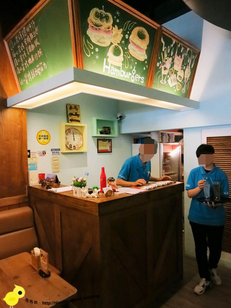 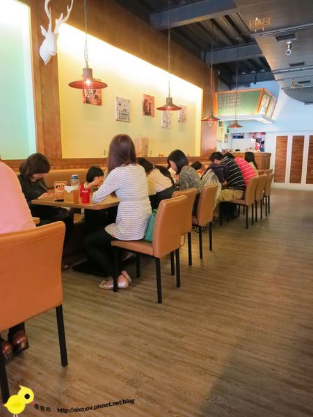 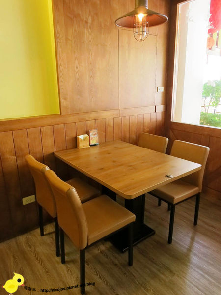 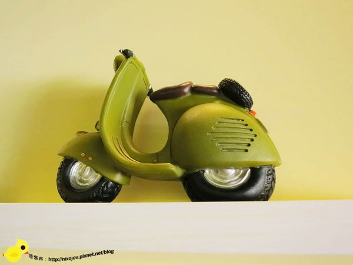有別一般的美式餐廳 採用溫暖、明亮的風格 店內還有許多小模型與玩具 相當受到小朋友的喜愛
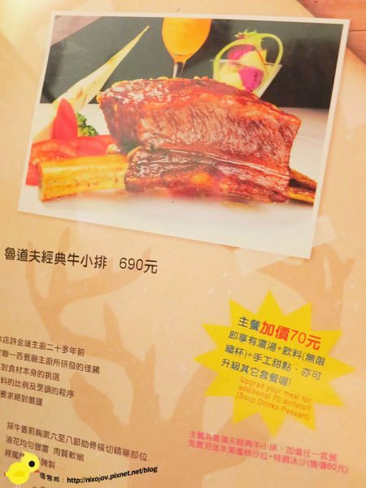這不是台塑牛小排嗎？？？ 一客只要６９０元，真的假的？這麼划算 不點一客真的會對不起自己呀
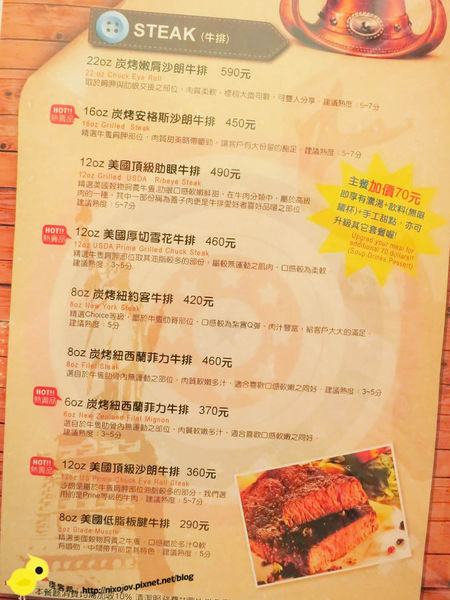 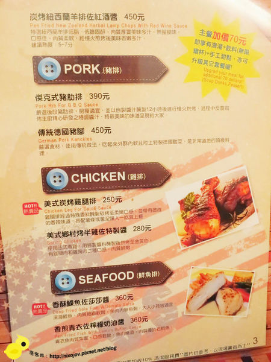 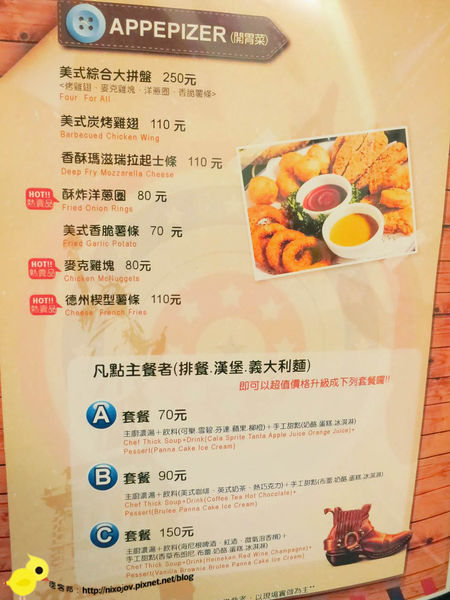 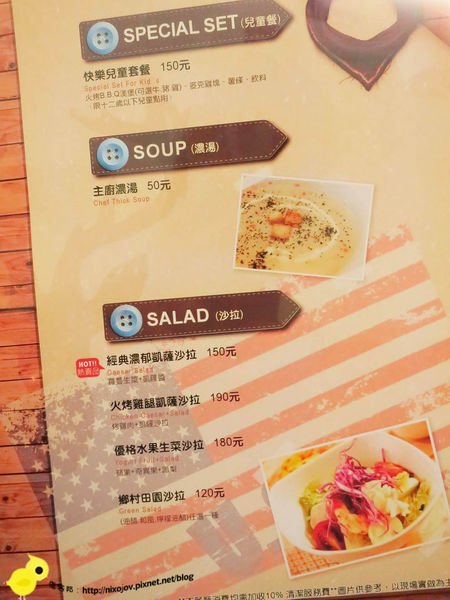 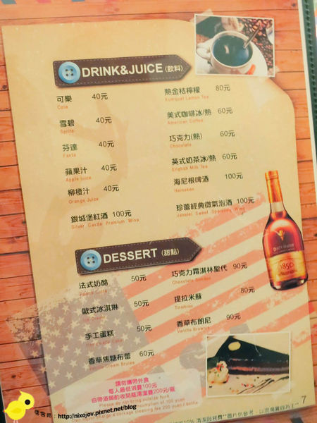店內除了賣排餐以外 還有賣漢堡、義大利麵、甜點 可供多樣化選擇
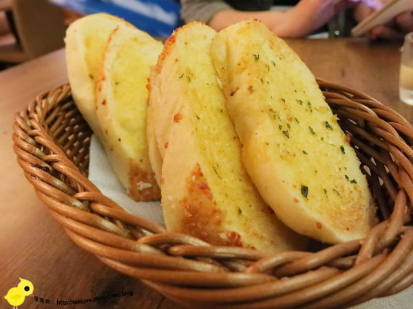 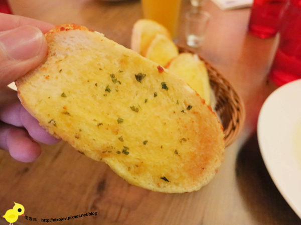柔軟的起士麵包，再塗上店家自行調製的大蒜醬 吃起來，麵包的柔軟，加上濃濃的起士味，混合著鹹中帶甜的大蒜醬
使用的是原汁的方式 喝得到天然柳澄汁果粒
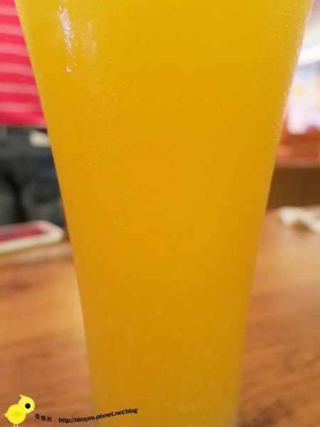使用雞骨所熬成的高湯，再與麵粉和牛奶做成的白醬濃湯 喝起來，濃濃的雞高湯味，帶有奶香味 十分的濃郁、香 而且事後有跟店家詢問確認過 這是廚師每天自己熬的 因為對於常常品嘗美食的布咕先生來說 是不是化學，一吃便知分曉
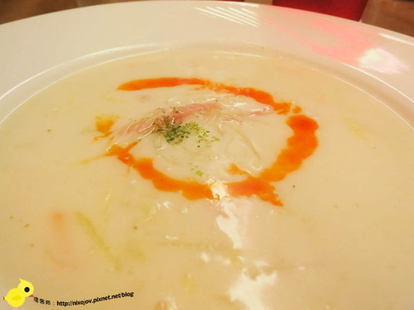採用油醋醬與新鮮蔬菜做搭配 油醋醬的酸，讓在食用正餐前的布咕先生 胃口大開
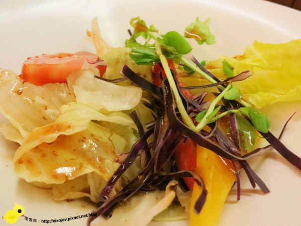牛小排一上桌，整個牛排與醬油的香味，已經散佈在我的鼻子中 這……這……根本就是一客牛小排，大家一起香吧
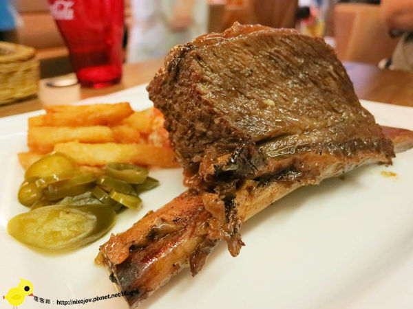上桌之後，可以請服務人員幫我們做桌邊服務 先把肉和骨頭分離
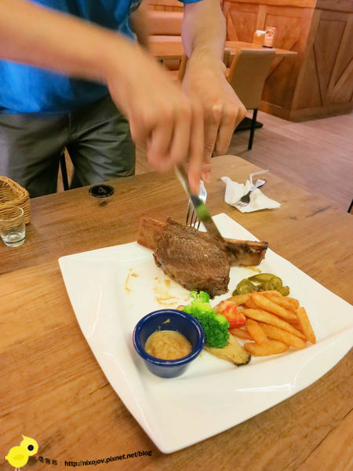這間店的牛小排都是老闆冷藏醃了三天 並且在客人來的前一小時做烘烤的 可想而知，他的美味一定不在話下 除此之外，如果想品嘗這道，建議大家提前訂位 以免等待時間過久
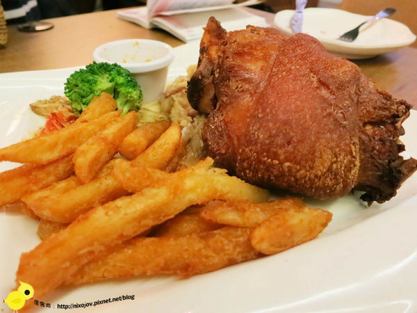 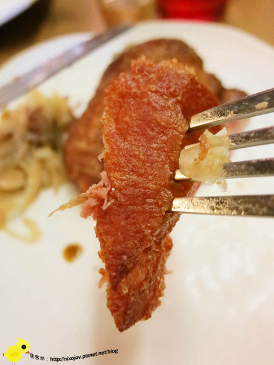這……這……這個豬腳的外皮，實在太威啦！！ 比我們平常吃的餅乾，還要脆，脆到刀子都切不下去了 吃下去，滿滿的豬肉香味，越爵越香 讓人忍不住搶其它人的份來吃
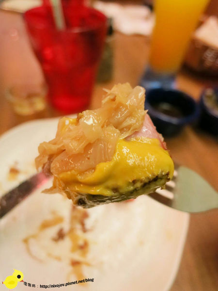肉的部份 可與店家自己用高麗菜與培根手工炒出來的酸菜一起食用 吃起來肉質相當軟嫩，帶有濃厚的煙燻味 真的是名符其實的外脆內嫩的德國豬腳 而且一點豬腥味都沒有，取而代之的是廚師特別一道手續的煙燻味
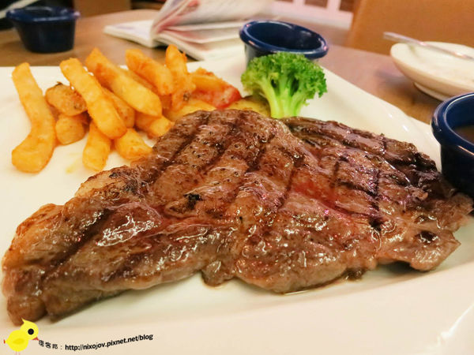我們點的是六分熟 當我們切開的時候，完全不會有中間生 外面熟透的感覺 而是真真實實的六分熟 中間呈現粉紅色 廚師的技術相當的厲害 而且，這道牛排，完全不需要任何的醬汁 光直接吃肉，就非常夠味了 牛排自然的甜味，不需要其它任何東西的點綴 就可以襯托他的美味
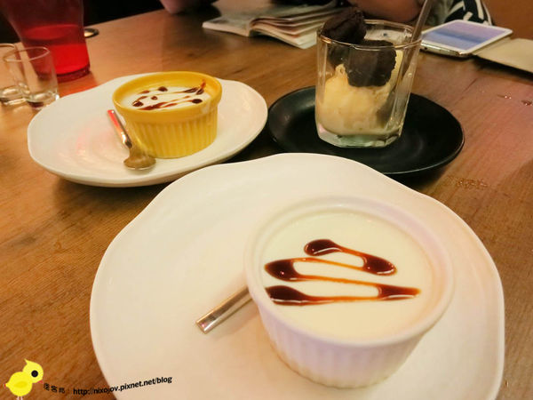 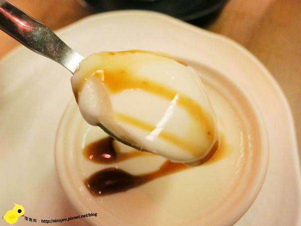吃起來，相當的滑嫩，比我們一般吃的布丁、奶酪，還要更為滑嫩
引自:http://nixojov.pixnet.net/blog/post/113314460-%E3%80%90%E6%96%B0%E7%AB%B9%EF%BC%8E%E7%AB%B9%E5%8C%97%E3%80%91rudolph%E9%AD%AF%E9%81%93%E5%A4%AB%E7%BE%8E%E5%BC%8F%E4%B8%BB%E9%A1%8C%E9%A4%90%E5%BB%B3-%E5%B9%B3